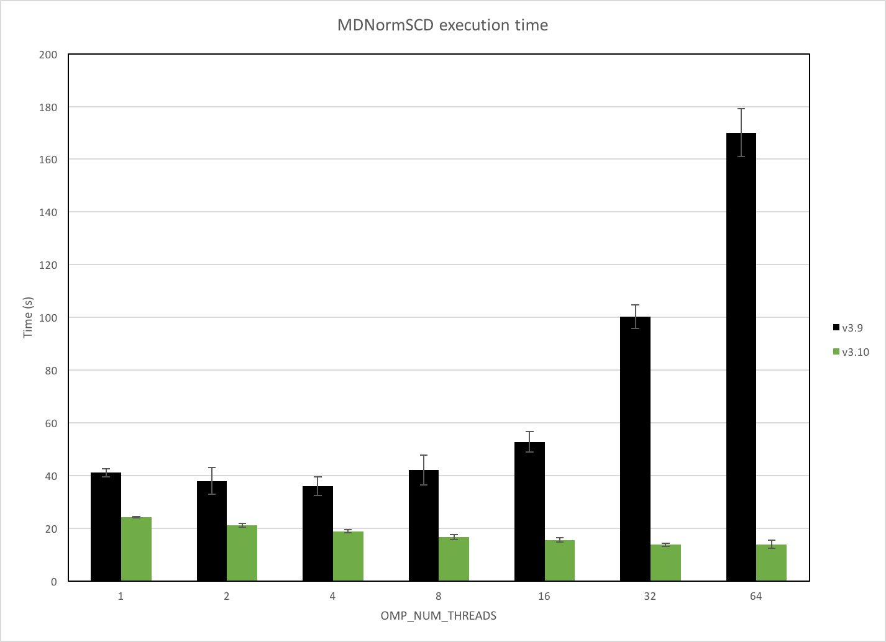
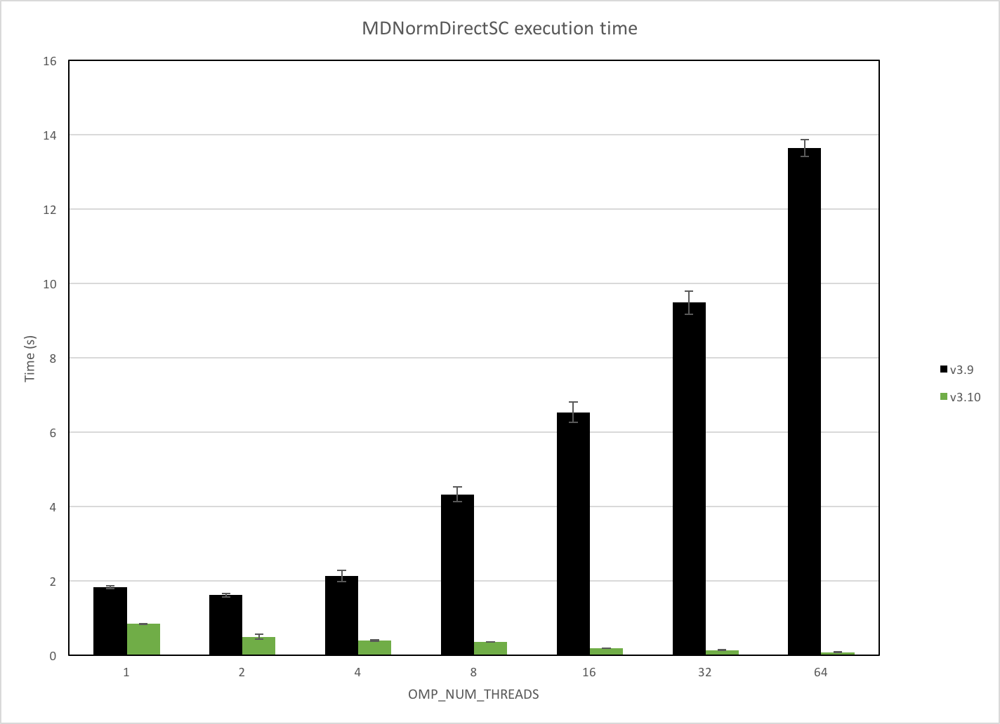

Framework Changes#
API#
The default multiple file limit is now made facility dependent. It is 1000 for ILL, and 100 for all the others.
Frequency unit (GHz) included as an option to represent energy transfer.
Framework changes now mean scanning workspaces (workspaces with moving detectors) can be created. Currently this can be tested using a new option in CreateSampleWorkspace, by setting NumScanPoints. This is still experimental, as such the instrument view, saving workspaces and some algorithms will not work correctly with the scanning workspaces.
Fixed a bug where certain validators would crash with SingleValuedWorkspaces instead of rejecting them.
New unit \(d_{\perp}\) (Angstrom) is implemented for TOF powder diffraction.
Algorithms#
Removed the optional flag
LocationParametersfromClearInstrumentParameters.New method IAlgorithm::helpURL returns an optional documentation webpage. Useful when registering Python algorithms at runtime that are not part of the Mantid distribution.
New#
DeleteWorkspaces will delete a list of workspaces.
IntegrateEllipsoidsTwoStep v1 which can be used to integrate weak single crystal peaks by using parameters derived from strong peaks.
FindEPP-v2 reimplements FindEPP-v1 in C++, providing an order of magnitude gain in execution time for large workspaces.
LineProfile will give a horizontal or vertical line profile over a workspace.
SaveYDA do export Workspace2D to Frida 2.0 YAML format.
Improved#
RawFileInfo now provides sample information.
SetInstrumentParameter now supports also boolean parameters, and better validates the inputs.
FilterEvents now accepts a general TableWorkspace as the splitters workspace. The TableWorkspace must have at least 3 columns. The first 3 columns are for relative starting time, relative stopping time and target workspace tag for splitters, respectively.
GenerateEventsFilter now set the unit of X-axis of the MatrixWorkspace (i.e., output splitters workspace) to second.
FilterEvents now generates a sample log named splitter of each output workspace (i.e., splitted workspace) to represent the event filter that is applied to it.
FilterEvents now splits all the sample logs if the input splitters are given by MatrixWorkspace or a general TableWorkspace.
FilterEvents now supports to filter by pulse time with input splitters in format of MatrixWorkspace and general TableWorkspace.
FilterEvents now sorts events before filtering. There is no need to call SortEvents before calling
FilterEvents.FilterEvents now accept splitters from
TableWorkspaceandMatrixWorkspacein both relative time and epoch time.FilterEvents now only accept splitters from
TableWorkspaceandMatrixWrokspacein unit as second.Two new properties were added to Integration v1 RangeLowerList and RangeUpperList can be used to give histogram-specific integration ranges.
FindEPP v2 does not output the two extra workspaces from the Fit v1 anymore.
ApplyDetailedBalance: User can select the dynamic susceptibility versus energy or frequency.
PredictPeaks is now faster on instruments that do not have rectangular detectors. The speed up with vary from instrument to instrument, but for CORELLI this was shown to reduce execution time from ~64 mins to < 1 min.
MergeRuns now has a sum option and more control over failure when binning is different or sample logs do not match.
Made it possible for LiveListeners to read properties from the calling Algorithm. This gives greater flexiblity for authors of LiveListener plugins.
Improved verification of IDFs
AddSampleLog now can optionionally take a MatrixWorkspace for the time and value of the newly-added TimeSeriesProperty sample log.
ExportTimeSeriesLog now can export the first derivative of the sample log as an opotion.
ExportTimeSeriesLog now add information of exported log to the output work, which AddSampleLog can retrieve automatically.
ThreadPoolnow respects the value ofOMP_NUM_THREADSenvironment variable (documented in gcc)Improved parallel scaling of MDNormSCD with > 4 cores.
{kind=link}

Benchmark machine: 4 x Intel Xeon E5-4650 @ 2.7GHz (32 cores / 64 threads)#
Improved parallel scaling of MDNormDirectSCD with > 4 cores.
{kind=link}

Benchmark machine: 4 x Intel Xeon E5-4650 @ 2.7GHz (32 cores / 64 threads)#
Added optional inputs TemporaryDataWorkspace and TemporaryNormalizationWorkspace to MDNormSCD and MDNormDirectSCD for accumulating data and normalization from multiple runs. This avoids allocating and deallocating temporary workspaces.
Reduced execution time of
EventList::sortTofby over 2x, improving performance in algorithms such as CompressEvents v1 and SortEvents v1 which call it.LoadDNSLegacy can now read the TOF data. CoilCurrentsTable is now optional. The default coil currents are now in the instrument parameters file.
LoadNexusProcessed is now approximately 33x faster when loading a
PeaksWorkspacewith a large instrument attached.The default values for guessed peak widths in PDCalibration have been changed to match the values used in FindPeaks.
Bug Fixes#
Fixed two issues with absolute rotations that affected RotateInstrumentComponent. Previously, setting the absolute rotation of a component to
Rwould result in its rotation beingparent-rotation * R * inverse(relative-parent-rotation).MonteCarloAbsorption has been modified to allow
EventWorkspaceas inputFixed an issue where the log
proton_charge_by_periodwas not loaded for LoadEventNexus.Fixed an issue where MonteCarloAbsorption v1 would use the wavelengths from the first histogram of InputWorkspace only making the algorithm unusable for workspaces with varying bins.
Fixed an issue with the
GroupingPatternproperty in GroupDetectors v2, where incorrect spectra were being used if spectrum numbers are not 1-based indices.Fixed an issue with CreateWorkspace v1 where giving bin edges as
VerticalAxisValueswould fail.Fixed an issue with the TimeInterval property in GenerateEventsFilter, where the algorithm would get stuck in an infinite loop if no non-zero values were provided to the property.
Fixed progress reporting in LoadNexusProcessed.
Performance#
Following a large effort to change some of the core instrument aspects of Mantid, we are pleased to announce very significant improvements in performance as part of the 3.10.0 release. ConvertUnits, for example, is running >2x times faster than possible in our last major 3.9.0 release. Amongst others, NormaliseVanadium and MaskDetectorsInShape now give a 2x speedup. ConvertSpectrumAxis and AnvredCorrection are examples, of a few monitored algorithms, that are demonstrating a more modest 10% improvement in speed over the last major Mantid release. Aside from granular improvements at the algorithm level, we have observed that many of the Direct Inelastic technique area workflows are 2x faster than before.
As a consequence of these changes, CopyInstrumentParmeters, LoadInstrument and several other Load Algorithms are reporting a modest slowdown. We hope to address these as part of our scheduled future work in this area.
Bugs#
We have fixed a bug where Mantid could crash when deleting a large number of workspaces.
Fixed a bug in ConvertToMD causing it to fail with the error “Run::storeEnergyBinBoundaries - Inconsistent start & end values” if monitors were all NaN, Inf, or zero.
Fixed a bug in illuminated volume calculation which could make MonteCarloAbsorption fail.
CurveFitting#
Improved#
UserFunction now supports \(erf\) and \(erfc\).
IkedaCarpenterPV now constrains all parameters to be non-negative which helps the fits converge faster and produces better fits.
Python#
For multiple output parameters, python algorithms now return a
namedtupleinstead of atuple. Old scripts should still work, but one can now doresults = GetEi(w) print(results) print(results.IncidentEnergy) print(results[0])
This will yield:
GetEi_returns(IncidentEnergy=3.0, FirstMonitorPeak=0.0, FirstMonitorIndex=0, Tzero=61.77080180287334) 3.0 3.0
mantid.geometry.Objecthas a new methodvolume()which calculates the volume of the shape.A
SpectraAxisobject can now be created from Python, in a similar way to the other Axis types:ws1 = CreateSampleWorkspace() # Create a new axis reference s_axis = SpectraAxis.create(ws1)
CrystalStructure,UnitCell,PointGroup, andSpaceGroupall have better console printingFixed a bug on MDHistogramWorkspaces where passing an index larger than the size of the dimensions of the workspace to
setSignalAtwould crash Mantid.